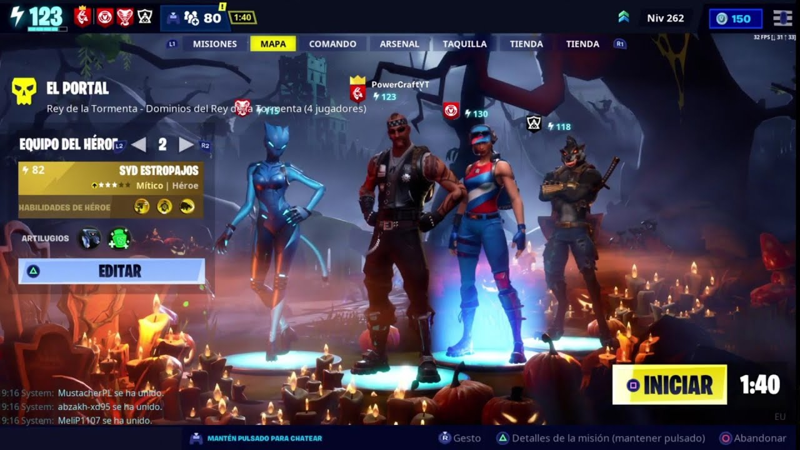

Fortnite Salvar el Mundo: Más Allá de la Batalla Real
Fortnite Salvar el Mundo, el a menudo subestimado hermano mayor del popular modo Battle Royale, ofrece a los jugadores una experiencia cooperativa rica en narrativa y desafíos. A diferencia del frenesí competitivo de Battle Royale, Salvar el Mundo sumerge a los jugadores en una trama cautivadora mientras luchan contra hordas de enemigos y trabajan juntos para proteger lo que queda de la humanidad.
Historia y Trama:
En Salvar el Mundo, los jugadores se enfrentan a la amenaza de una tormenta misteriosa que ha transformado a la mayoría de la población en criaturas peligrosas. Como comandantes de un equipo de defensa, los jugadores deben explorar el mundo, descubrir secretos y desentrañar la verdad detrás de la tormenta. La historia evoluciona a medida que los jugadores avanzan, proporcionando un atractivo contexto narrativo para sus aventuras.
Cooperación y Estrategia:
A diferencia del juego individual en Battle Royale, Salvar el Mundo fomenta la cooperación entre jugadores. Los equipos deben trabajar juntos para construir fortificaciones, defender objetivos y completar misiones variadas. La estrategia y la comunicación son clave para superar los desafíos, lo que crea una experiencia más táctica y colaborativa.

Construcción y Defensa:
En Salvar el Mundo, la construcción va más allá de la creación de estructuras improvisadas en medio de un tiroteo. Los jugadores deben planificar y construir fortificaciones para defender sus objetivos contra las oleadas de enemigos. Esta mecánica añade una capa estratégica al juego, ya que la eficacia de las defensas puede marcar la diferencia entre el éxito y el fracaso.
Recompensas y Progresión:
El juego recompensa a los jugadores con botines y recursos valiosos a medida que avanzan en las misiones. Estos recursos se utilizan para mejorar y personalizar armas, construir estructuras más fuertes y desbloquear nuevas habilidades. La progresión en Salvar el Mundo es una mezcla de habilidad, estrategia y gestión de recursos.
Eventos y Actualizaciones:
Al igual que Battle Royale, Salvar el Mundo recibe actualizaciones regulares que introducen nuevos contenidos, eventos y desafíos. Estos eventos mantienen fresca la experiencia de juego y ofrecen a los jugadores razones constantes para regresar y enfrentarse a nuevos desafíos.
Fortnite Salvar el Mundo ofrece a los jugadores una inmersión más profunda en el universo de Fortnite, donde la cooperación y la estrategia son esenciales. Con una historia envolvente y desafíos constantes, este modo proporciona una experiencia única y complementaria al trepidante ritmo de Battle Royale.
Elaborado por: Rodriguez Ortiz Jorge Angel 6to 23
Escuela Preparatoria No. 1 UAEH
Aplicaciones computacionales web y móviles V2.1
6 de Febrero de 2024